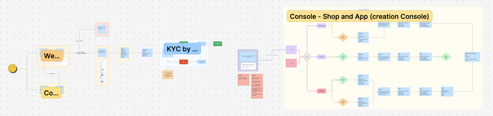
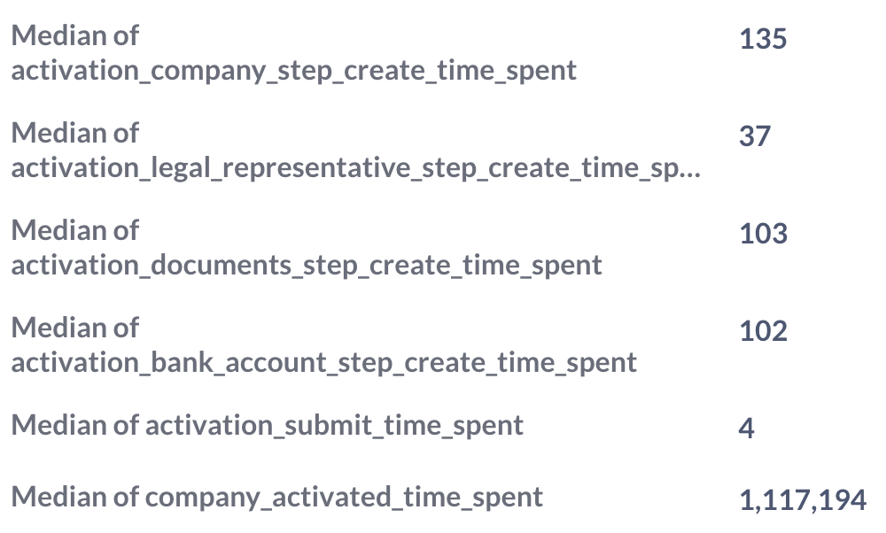
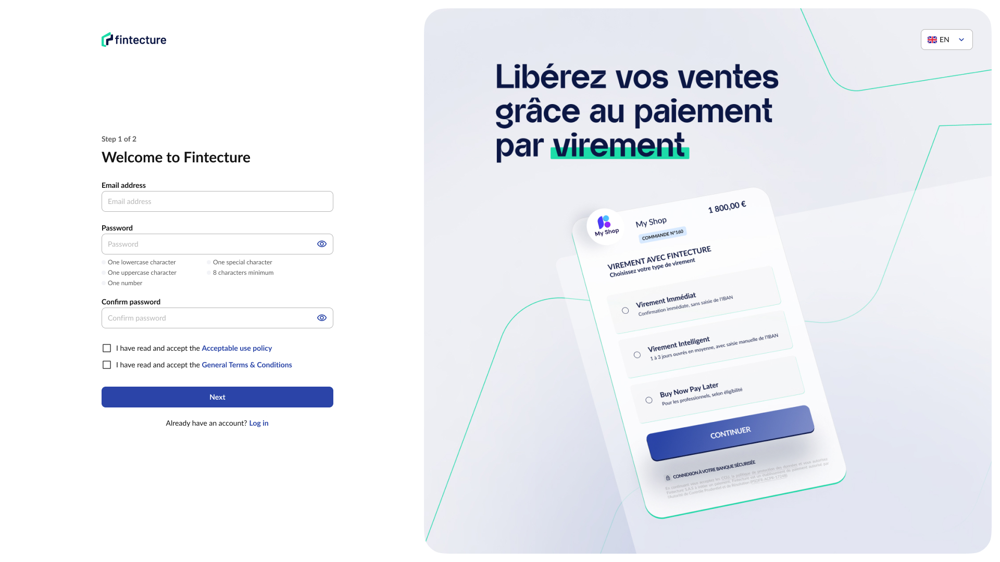
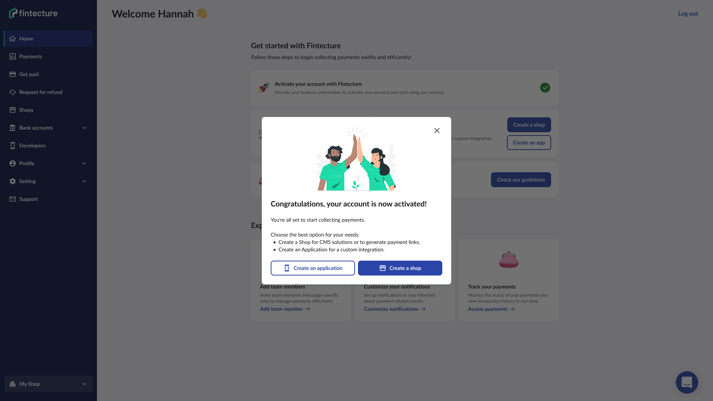
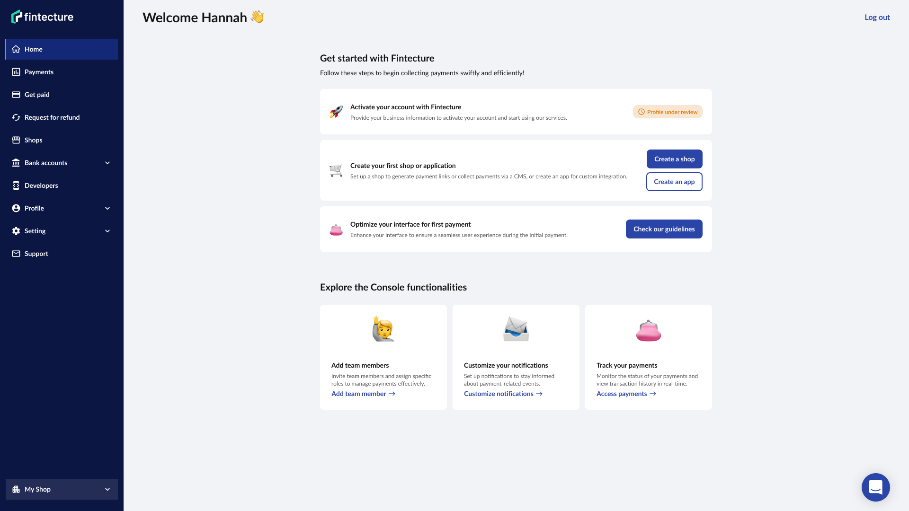
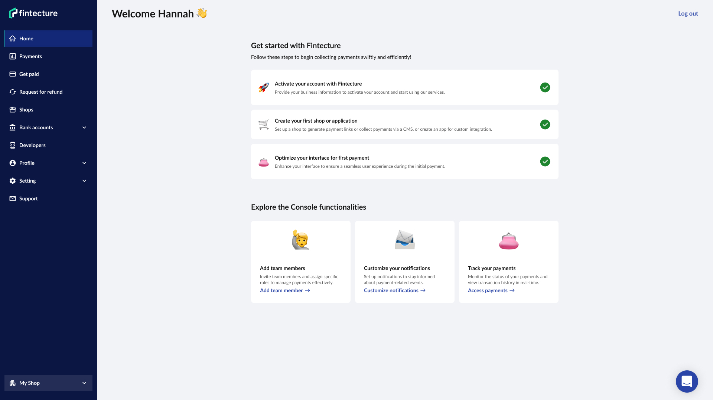
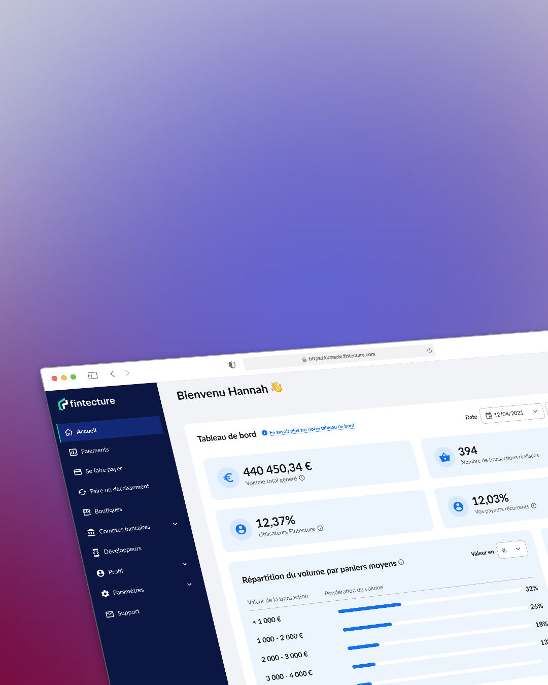

Fintecture
Onboarding
My role
Product Designer
Tools
Figma
Notion
Timeline
2 months
From April to May 2025
Context
As Fintecture continues to reshape B2B payments, it became increasingly clear that our onboarding experience for merchants needed to evolve. While the platform itself was gaining in power and flexibility, the first steps a merchant took with us didn’t yet reflect that same clarity and efficiency.
Problem
In conversations with our Support and Compliance teams, we discovered that the average onboarding time for a merchant was 45 days.
That’s 45 days during which the merchant (here we’re focusing on SMBs, as big accounts receive tailored support from Fintecture) was generating no revenue through our platform.
We needed to understand why it was taking 45 days: what was blocking progress, what was slowing the process, what was creating friction, and where the main pain points lay.
Note: When we talk about onboarding here, we mean the entire journey from sign-up to having a fully operational Console (back office) capable of generating revenue.
Goals
💪 Empower merchant autonomy
We wanted merchants to feel more in control of their setup, to understand what they needed to do, why it mattered, and how to move forward without unnecessary friction.
🌟 Stronger first impression
Onboarding is where trust is built. It was essential that the experience feel polished, purposeful, and aligned with the value we promise as a brand.
📉 Reduce time activation by 45%
Speed matters especially in B2B contexts. The faster a merchant gets onboarded and activated, the quicker they see value, and the more likely they are to stay engaged.
Journey mapping
To understand why merchant onboarding was taking an average of 45 days, we collaborated with compliance, and support teams to create a comprehensive service blueprint of the existing journey. This mapping exercise allowed us to visualize the end-to-end flow, identify dependencies between teams, and surface where friction points were likely to emerge for merchants.
By breaking the journey down in this way, we could clearly see where process complexity and manual bottlenecks were adding unnecessary delays. This became the foundation for our redesign strategy.


Key research insight
Diving into the data and conducting a thorough review of the existing onboarding flow revealed several critical insights that shaped our redesign approach:
Form usability issues
The KYB forms were missing essential user experience elements like format guidelines, real-time validation, and pre-filled inputs, resulting in errors and frustration during completion.
Lack of user guidance
Once merchants landed on the Console homepage after signing up, there was no clear direction or visual cues guiding them to the next steps in the process. This left many unsure about how to proceed.
Unclear emailing
The automated onboarding email lacked clear guidance, leaving merchants uncertain about the next steps and unsure of what actions they needed to take.
Compliance bottleneck
Data showed that merchants spent surprisingly little time completing the KYB forms. Instead, the major delay was the manual account approval by the Compliance team, which was time-consuming
Complexity in application creation
Creating an application in the Console, the final step to start collecting payments, was highly technical and confusing. Merchants and support spent hours, sometimes days, exchanging back and forth to clarify how to properly set up the application.
Solution
Homepage
shippedWe completely reimagined the homepage as a progressive, self-guided onboarding flow. Language was simplified, contextual guidance surfaced exactly when needed, and key status indicators were made more transparent to keep merchants informed. FAQ section and documentation links were introduced to empower merchants with quick access to help. The overall design was refreshed to feel friendlier and more contemporary.
KYB form
shippedWe improved form usability by adding pre-filled fields, real-time error notifications, and format restrictions, reducing user errors and speeding up completion times.
Onboarding emails
specs readyWe rewrote the onboarding emails to clearly communicate the merchant’s current status, whether they’re in progress, paused before submission, or if some documents require attention. This clarity helped reduce confusion and keep users in the flow.
Compliance team workflow
specs readyWe streamlined the compliance status taxonomy by cleaning up redundant or confusing status options. We also introduced automated email triggers for non-compliant documents, replacing the previous manual email process to save time and reduce errors.
Signup page
wireframe readyWe simplified the sign-up process by reducing the amount of information requested and updating the interface with a modern, clean design, making it easier and faster for merchants to get started.
Application creation page
researchThis was a substantial challenge that warranted its own dedicated sprint. Our primary goal is to simplify the process to reduce the number of support tickets and help merchants set up their applications more independently and efficiently.




Results
From 45 days to 30 days
The average onboarding duration was reduced, speeding up merchant activation and time to value.
From 10 days to 7 days
The time compliance spends to get non-conforming documents corrected dropped from 10 days to around 7 days, improving overall process efficiency.
2%
Support tickets decreased by about 2%, primarily because the most frequent issues, related to application creation, are outside the scope of this phase and remain a focus for future work.
Reduced manual workload for compliance team
Automated email triggers and streamlined status updates freed up valuable time for compliance, allowing faster case handling and less manual follow-up.
Higher early engagement
Merchants are more informed and guided throughout the process, leading to increased activation rates and smoother progression through onboarding stages.
Improved merchant autonomy and satisfaction
Clearer guidance and communication reduced confusion and dependency on support, empowering merchants to progress independently.
What I learned
- At the start, the PM and I believed most time was lost on the KYB form, which lacked guidance, navigation, automation, and feedback. However, data showed merchants understood the form well and completed it in under 30 minutes on average. This highlighted how data-driven insights prevent wasted effort and guide priorities.
- Onboarding is a holistic journey, from first impression to product activation and use, not just the KYB form.
- Some features may seem unrelated to onboarding but are key experience touchpoints.
- Onboarding impacts both users and internal teams.
Explore additional projects

Fintecture
Dashboard

Fintecture
Invoices